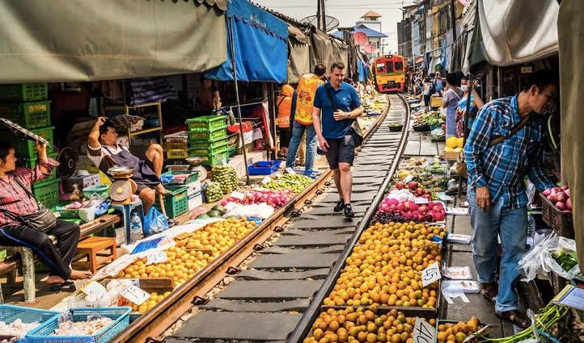
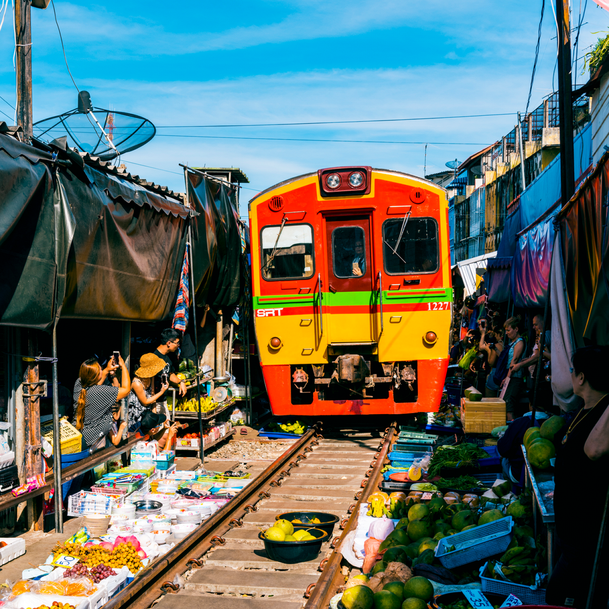
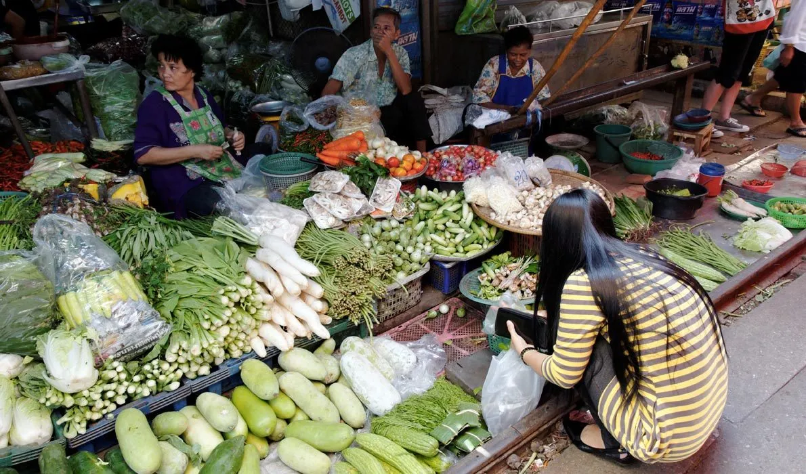
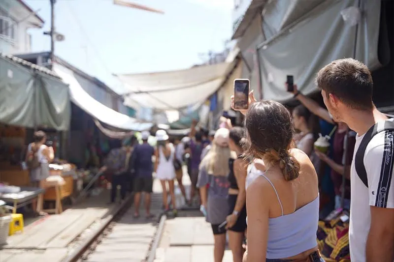
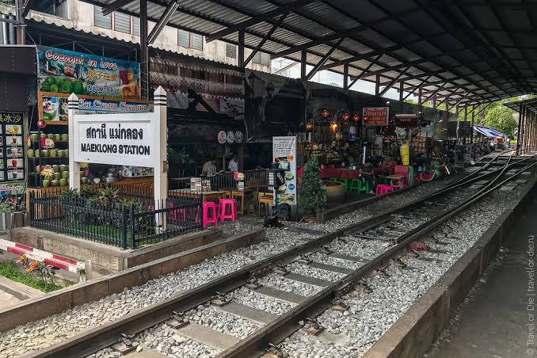

История рынка
Маеклонг появился как обычный местный рынок, где жители региона продавали свежие продукты и морепродукты. Со временем через территорию рынка прошла железная дорога, однако торговля не исчезла.
Вместо того чтобы переносить рынок, продавцы приспособились к железнодорожному движению. Так появилась необычная система, при которой торговые навесы и часть товаров можно быстро убрать перед проходящим поездом.
Сегодня рынок сохраняет функцию настоящего местного рынка, а необычное расположение рядом с железной дорогой сделало его популярным среди туристов.

Главная особенность рынка
Железнодорожные пути проходят прямо через центр торговой зоны. С обеих сторон расположены прилавки со свежими продуктами, а расстояние между товарами и поездом во время его прохождения становится минимальным.
Когда поезд приближается, продавцы получают сигнал и начинают быстро складывать навесы. Корзины, ящики и другие товары отодвигаются от рельсов, освобождая дорогу составу.
Сам поезд проходит через рынок медленно. После того как последний вагон покидает торговую зону, навесы возвращаются на место, а продавцы снова раскладывают товары.

Момент прохождения поезда
Именно ради этого момента большинство туристов и приезжает в Маеклонг. За несколько минут до появления поезда торговцы начинают освобождать пространство над рельсами.
Навесы складываются, товары отодвигаются, а посетители отходят в безопасные места. Затем поезд медленно проходит буквально между торговыми рядами.
После прохождения состава рынок практически моментально возвращается к обычной жизни. Это выглядит особенно необычно, если наблюдать за процессом с конца или начала торговой улицы.
Расписание поездов
По данным актуальных расписаний, поезд проходит через рынок несколько раз в день. В 2026 году обычно ориентируются на следующие проходы:
- 08:30 — прибытие поезда в Маеклонг
- 09:00 — отправление из Маеклонга
- 11:10 — прибытие поезда
- 11:30 — отправление
- 14:30 — прибытие
- 15:30 — отправление
- 17:40 — прибытие
Расписание может изменяться, поэтому перед поездкой лучше дополнительно проверить актуальное время на месте или уточнить его у железнодорожной службы.
Что продают на рынке
Маеклонг — это не просто туристическая достопримечательность, а настоящий местный рынок. Здесь продаются продукты, которые жители региона покупают для повседневной жизни.
Свежие морепродукты
Одной из главных особенностей рынка являются свежие морепродукты. На прилавках можно увидеть рыбу, креветки, кальмаров и других представителей местного улова.

Фрукты и овощи
Также на рынке продаётся большое количество фруктов и овощей. Здесь можно увидеть манго, бананы, кокосы, ананасы, перец и другие продукты тайской кухни.

Готовая еда
На территории рынка можно найти различные готовые блюда и закуски тайской кухни. Это хороший вариант, чтобы попробовать местную еду во время прогулки. При этом основная особенность Маеклонга заключается именно в атмосфере настоящего местного рынка, а не в большом количестве специально созданных для туристов заведений.
Как проходит посещение
Обычно туристы сначала просто гуляют вдоль торговых рядов, рассматривают продукты и выбирают удобное место для наблюдения за поездом.
Перед прибытием состава пространство возле рельсов постепенно освобождается. Это хороший момент, чтобы увидеть, насколько быстро продавцы привыкли к движению поездов.

После прохождения поезда можно снова пройти по торговым рядам и посмотреть, как буквально за несколько минут рынок возвращается к своему обычному состоянию.
Как добраться из Бангкока
Маеклонг находится за пределами самого Бангкока, поэтому поездку сюда обычно планируют отдельно или объединяют с другими достопримечательностями региона.
На автобусе
Один из вариантов — отправиться на автобусе из Бангкока в сторону Самутсонгкрам. Рынок расположен непосредственно возле станции Маеклонг, поэтому после прибытия до него можно дойти пешком.
На поезде
Для любителей железных дорог интересным вариантом является поездка на местном поезде по линии Маеклонг. Маршрут связан с железнодорожной линией Ban Laem–Maeklong и проходит через несколько небольших станций. Такой вариант занимает больше времени, но позволяет получить дополнительное впечатление от местного железнодорожного транспорта.
На такси или автомобиле
Самый простой вариант для компании из нескольких человек — такси или автомобиль. Особенно удобно это делать вместе с посещением плавучего рынка Дамноен Садуак, который находится в том же направлении от Бангкока.
